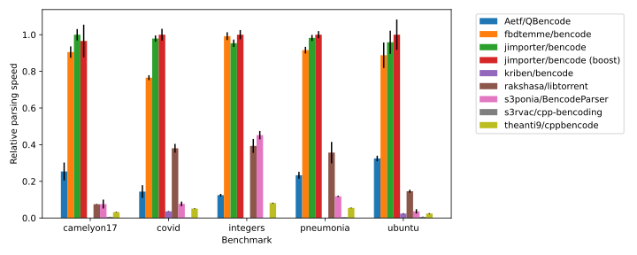
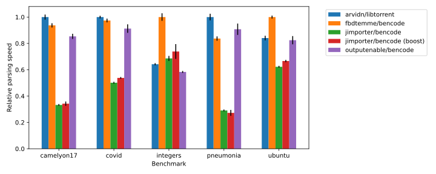

Performance¶
The decoding performance was benchmarked against following libraries:
Benchmarks¶
- integers:
A list of integer values with a uniform distribution over the full 64-bit signed integer range.
- pneumonia:
A bittorrent file with 29686 jpeg images of the kaggle RSNA Pneumonia Detection Challenge. The jpeg images are around 100 KiB each.
- camelyon17:
A bittorrent file with data of the CAMELYON17 challenge. It contains 1156 xml files and images. The images are a few GiB large.
- covid:
A bittorrent file of COVID-19 related images with 20 files of around 100 MiB.
- ubuntu:
A small bittorent file of the ubuntu 20.04 LTS server distribution.
Results¶
Value¶
libtorrent is not included since it does not have a bencode parser which decodes to a owning data representation.
View¶
Note that libtorrent does not actually decode integers when parsing, but defers to when the value is accessed. All other projects do parse the integers directly when decoding. s3rvac/cpp-bencoding does not have a view type.
The more extensive view model of libtorrent and fbdtemme/bencode clearly provides a large performance benefit for in-situ parsing by requiring less dynamic-memory allocations. Parsing large integer values such as those in the “integers” benchmark is significantly faster in fbdtemme/bencode due to SWAR optimisations.